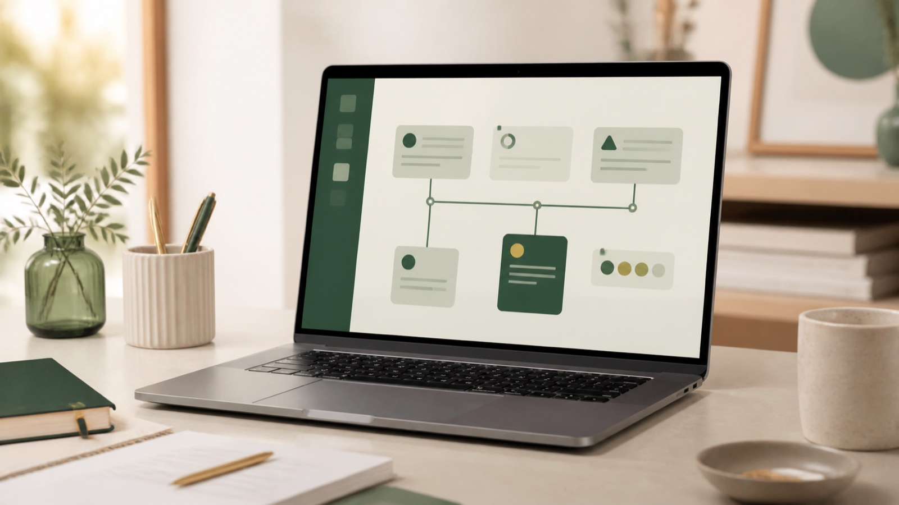

見積もり後の連絡を忘れる
顧客・案件・次回連絡日が頭の中やメモに散らばっている。
今の仕事の流れを確認し、合う方法を一緒に整理します
PROBLEMS
大きなDX計画は必要ありません。毎日・毎週くり返している手作業や、抜け漏れが起きやすいところから整理します。

顧客・案件・次回連絡日が頭の中やメモに散らばっている。
LINE、メール、表計算、見積書などへ同じ情報を入れ直している。
日々の仕事が忙しく、実績や強みをWebにまとめる時間がない。
流行のツールを入れる前に、まず改善すべき業務を一緒に整理したい。
SERVICES
商品ありきではなく、今の仕事の流れを確認してから提案します。
見積もり提出後の「次に連絡する日」を見える化。記憶や手書きメモに頼らない状態へ整えます。
商品、サービス、実績や強みを1ページに整理し、問い合わせへ進みやすいページを制作します。
今の仕事の流れを聞き、AIも活用しながら必要な画面を提案。実際に動くものを見てから決められます。
※掲載価格は現在の公開基準による参考料金です。実際の範囲・追加機能・保守等はヒアリング後のお見積りで明示します。
WORKS & DEMOS
Web制作実績と、業務改善の操作デモを分けて掲載しています。操作デモは顧客導入実績ではありません。
WHY REDIFE
「AI」「DX」「API」ではなく、今いちばん困っていることから聞きます。
いきなり大規模システムへ移行せず、負担の大きい箇所から整えます。
AIは候補や下書きに使い、仕事の流れ・画面・条件は人が確認します。
相談したその場で契約を求めず、内容と料金を確認してから制作を始めます。
FLOW
「こんなことできる？」程度で大丈夫です。LINEから困りごとをそのまま送ってください。
対面またはオンラインで、現在のやり方・使っている道具・負担が大きい工程を確認します。
必要な範囲だけに絞り、できること・できないこと・追加になる部分を分けてお伝えします。
内容を確認いただいてから着手します。業務アプリは動く画面も確認しながら進めます。
FAQ
はい。商品名ではなく、困っていることや毎日くり返している作業から一緒に整理します。
問題ありません。技術名ではなく、現在の仕事の流れを確認しながら必要な方法を選びます。
いいえ。内容と料金をご確認いただき、納得してから制作を開始します。
業種を限定せず相談を受け付けています。現在の仕事の流れや困りごとを確認し、対応できる範囲と方法をご案内します。
現在の標準対応エリアは岡山県内です。県外対応については条件が未確定のため、個別にご確認ください。
PROFILE
リダイフ運営・SEOディレクター
Webライターとして6年以上、累計500記事以上の制作に携わり、SEOディレクションやLP制作を行っています。専門用語を並べるのではなく、目的と現在の仕事の流れを確認しながら、Web発信や業務の整理を進めます。
FREE CONSULTATION
何を作るか決める前に、まず今の仕事を整理します。